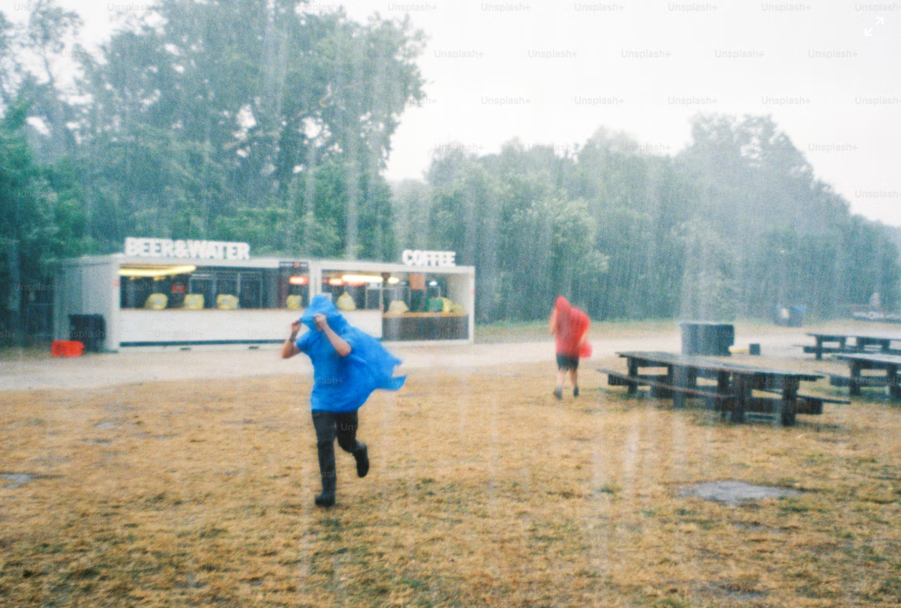

Which Season is the Best?
Which season is the best?

Which season is the best?
Fall is elegance. Crisp air, golden leaves, and fashion-forward layers make it the most aesthetically pleasing season. It’s the time for pumpkin spice and Halloween fun. Fall is a gentle transition, a moment to slow down and appreciate change. It’s not too hot, not too cold—just perfect.
Summer is too hot, the monsoon too humid — both guarantee a bad hair day.
Harsh vasita